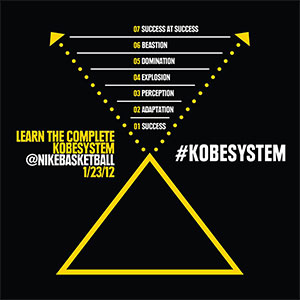

The History of The Black Mamba
 Kobe Bean Bryant (born August 23, 1978) is an American professional basketball player for the Los Angeles Lakers of the National Basketball Association (NBA). He entered the NBA directly from high school, and has played for the Lakers his entire career, winning five NBA championships. Bryant is a 16-time All-Star, 15-time member of the All-NBA Team, and 12-time member of the All-Defensive team. As of March 2013, he ranks third and fourth[3] on the league's all-time postseason scoring and all-time regular season scoring lists, respectively.
{kind=link}
Bryant enjoyed a successful high school basketball career at Lower Merion High School in Pennsylvania, where he was recognized as the top high school basketball player in the country. He declared his eligibility for the NBA Draft upon graduation, and was selected with the 13th overall pick in the 1996 NBA Draft by the Charlotte Hornets, then traded to the Los Angeles Lakers. As a rookie, Bryant earned himself a reputation as a high-flyer and a fan favorite by winning the 1997 Slam Dunk Contest.
Bryant and Shaquille O'Neal led the Lakers to three consecutive championships from 2000 to 2002. In 2003, Bryant was accused of sexual assault after having sex with a hotel employee in Edwards, Colorado. In September 2004, prosecutors dropped the case after his accuser refused to testify, though a civil suit was later settled out of court. A heated feud between the duo and a loss in the 2004 NBA Finals was followed by O'Neal's trade from the Lakers after the 2003–04 season. Following O'Neal's departure Bryant became the cornerstone of the Los Angeles Lakers franchise. He led the NBA in scoring during the 2005–06 and 2006–07 seasons, setting numerous scoring records in the process. In 2006, Bryant scored a career-high 81 points against the Toronto Raptors, the second most points scored in a single game in NBA history, second only to Wilt Chamberlain's 100-point game in 1962. He was awarded the regular season's Most Valuable Player Award (MVP) in 2008. After losing in the 2008 NBA Finals, Bryant led the Lakers to two consecutive championships in 2009 and 2010, earning the NBA Finals MVP Award on both occasions.
At 34 years and 104 days of age, Bryant became the youngest player in league history to reach 30,000 career points. He is also the all-time leading scorer in Lakers franchise history. Since his second year in the league, Bryant has been selected to start every All-Star Game. He has won the All-Star MVP Award four times (2002, 2007, 2009, and 2011), tying him for the most All Star MVP Awards in NBA history. At the 2008 and 2012 Summer Olympics, he won gold medals as a member of the U.S. national team. Sporting News and TNT named Bryant the top NBA player of the 2000s.
{kind=link}